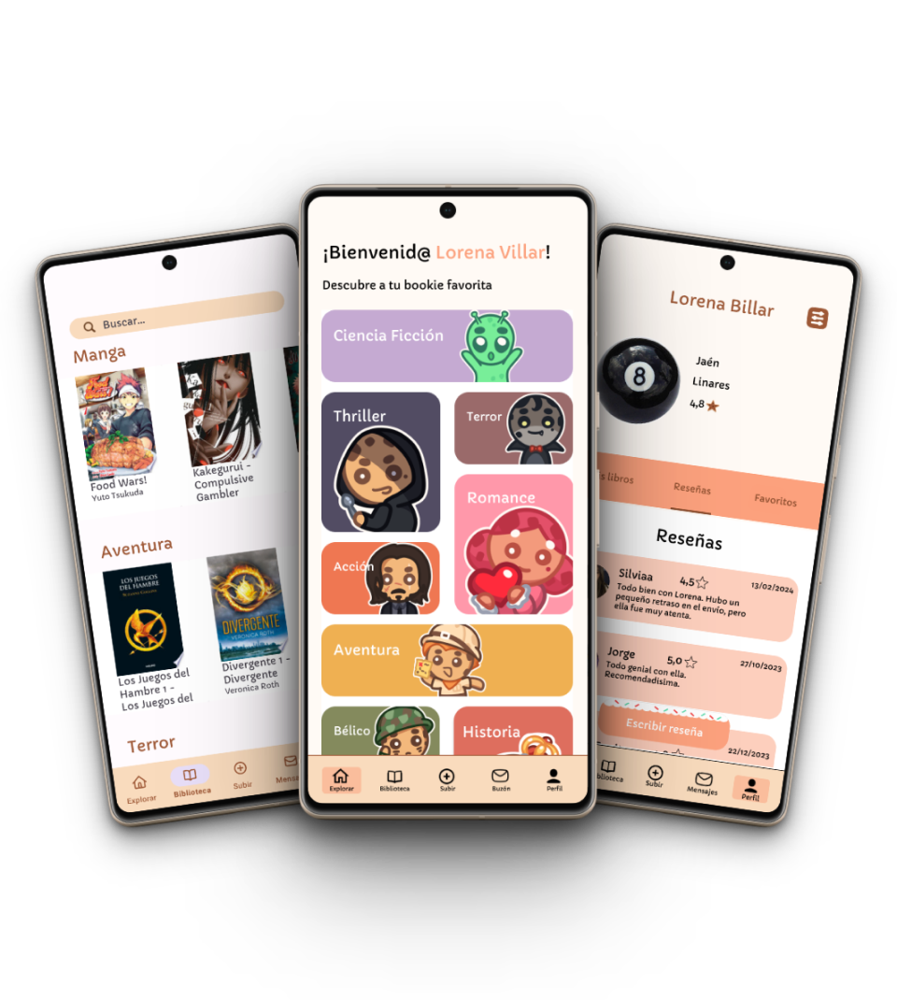

Te presentamos
Bookie
DALE UNA SEGUNDA VIDA A TUS LIBROS
¿Tienes libros acumulando polvo en tus estanterías?
En Bookie, creemos que cada libro merece ser leído y disfrutado una y otra vez.
Por ello, nuestra plataforma te permite poner en circulación esos libros que ya has leído, dándoles una nueva oportunidad de ser apreciados por otros lectores.
Al mismo tiempo, podrás disfrutar de una vasta colección de libros sin límites.
